Лижі, термальні води, замки й зимові міста. Обирай автобусну подорож і бронюй місце з Трускавця.
VEGA-ТУР запрошує на автобусні екскурсії з Трускавця впродовж року: термальні води, замки, міста, природа й зимові розваги в Карпатах. Дати виїздів можуть змінюватися залежно від набору групи, тож телефонуйте та бронюйте завчасно!
Відпочивайте з VEGA-ТУР! 📞 +380674296132, +380502278002
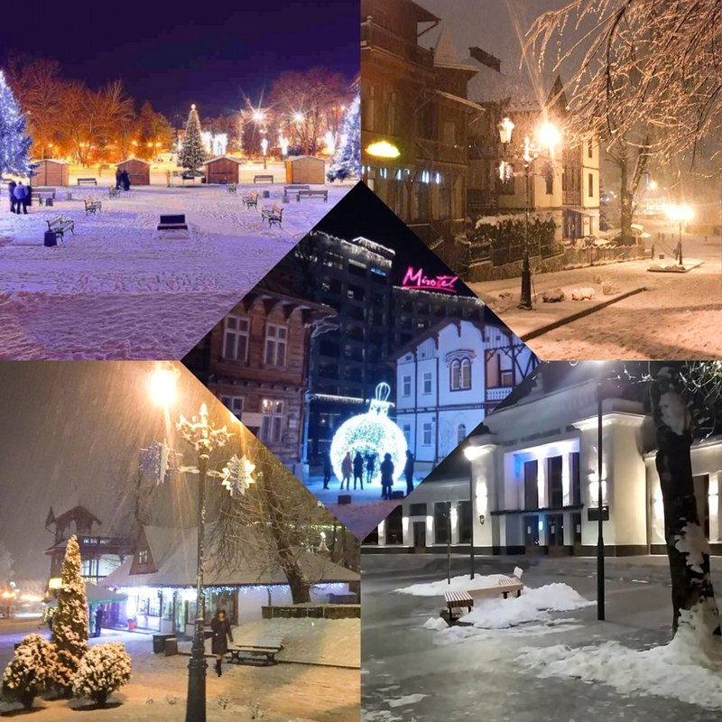
Вечірня екскурсія з Трускавця «Сміх та гріх». Запрошуємо на веселу пішохідну прогулянку центральною частиною міста. Відкрийте Трускавець з іншого боку: його архітектуру, історії курорту, легенди й кумедні байки.
Трускавець — це не лише цілюща вода «Нафтуся» та сторінки історії. У легкій розважальній програмі «Сміх та гріх» старовинні будівлі й минуле курорту оживають у веселих оповідях.
Екскурсія проводиться лише за попереднім дзвінком і відбувається за умови набору групи від 3 осіб. Обов’язково зателефонуйте, щоб попередньо замовити екскурсію та підтвердити її проведення.
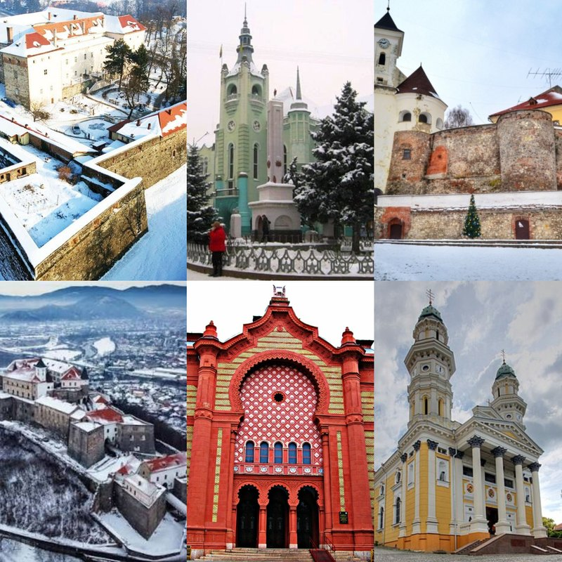
Екскурсія з Трускавця до Ужгорода та Мукачева. Круїз по Закарпаттю: два міста-суперники, два замки, багата історія.
Запрошуємо відкрити для себе Мукачево та Ужгород — два прекрасні міста Закарпаття з особливим характером і багатою історією. Прогуляємося їхніми вулицями, помилуємося архітектурою та відчуємо атмосферу старовинних міст.
На нас чекають два замки — Паланок у Мукачеві та Ужгородський. Кожен має свою історію: Паланок височіє на вулканічному пагорбі й пам’ятає важливі події краю, а Ужгородський замок — давня фортеця та одна з найвизначніших пам’яток міста. Їхні мури зберігають чимало історій, з якими познайомимося під час екскурсій.
Запрошуємо в історико-архітектурний круїз Ужгородом і Мукачевом: відкриємо два міста, відвідаємо два замки та почуємо історії, що формували Закарпаття.
Замок Паланок
Ужгородський замок
Харчування — оплачується самостійно за меню.
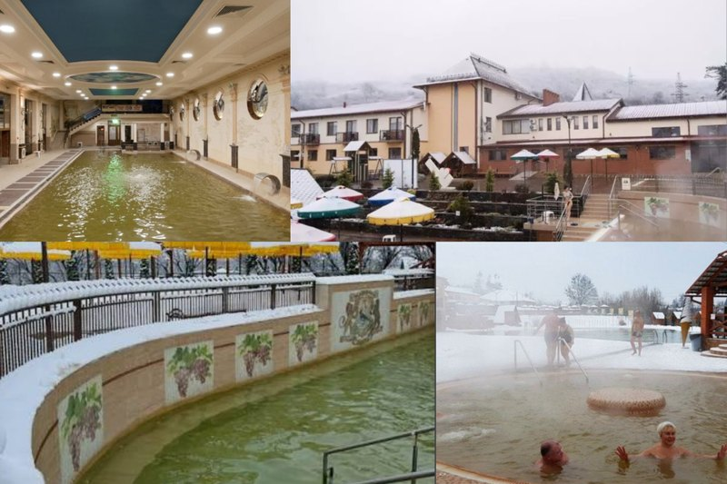
Екскурсія з Трускавця до Берегова. Відпочиньте в теплій мінеральній воді, скуштуйте закарпатські вина та познайомтеся зі смаками угорської кухні.
Берегове здавна славиться геотермальними джерелами. Тут можна відпочити від щоденної метушні та набратися сил у теплій мінеральній воді. Дорогою на вас чекає безкоштовна дегустація закарпатських вин, а в Береговому — знайомство з колоритною угорською кухнею.
Харчування — оплачується окремо за меню.
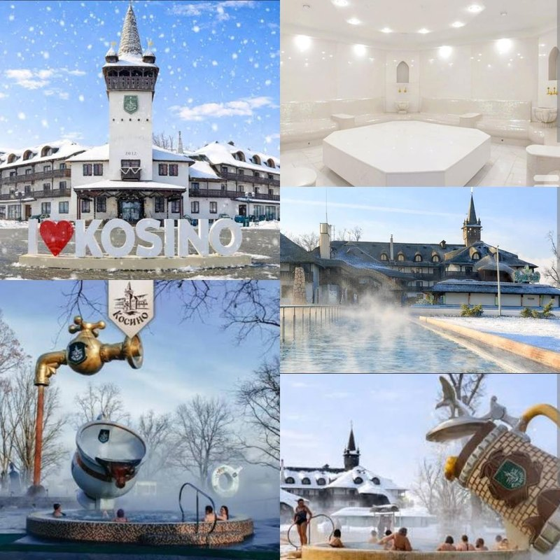
Екскурсія з Трускавця до Косино. На вас чекають безкоштовна дегустація закарпатських вин і три години відпочинку в термальних басейнах. У холодну пору вода в басейнах має комфортну температуру +36…+38°C.
У Косино працюють три басейни з термальною водою та два з прісною. Басейни, крім дитячого, відкриті цілий рік. До квитка на термальні басейни входить 30 хвилин у Королівських саунах.
Харчування — оплачується окремо за меню.
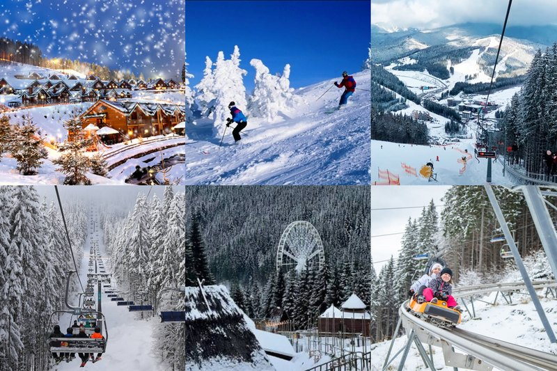
Екскурсія з Трускавця до Буковеля. Проведіть насичений день у серці Карпат і самі оберіть, яким буде ваш відпочинок: швидкі спуски, водні розваги, СПА чи знайомство з гуцульською культурою.
Буковель — гірський курорт біля села Поляниця на Івано-Франківщині. Тут на вас чекають карпатські краєвиди та різні способи провести день.
Любите активний відпочинок? Обирайте лижі або сноуборд, користуйтеся витягами, прокатом спорядження чи заняттями з інструктором. Також можна спробувати тюбінг або родельбан, завітати до етнопарку «Гуцул Ленд», погуляти курортом чи відпочити в аквапарку MAVKA з гірками, басейнами та СПА-зоною.
Розваги оплачуються окремо. Ціни встановлюють курорт і відповідні локації; доступність залежить від сезону та погоди.
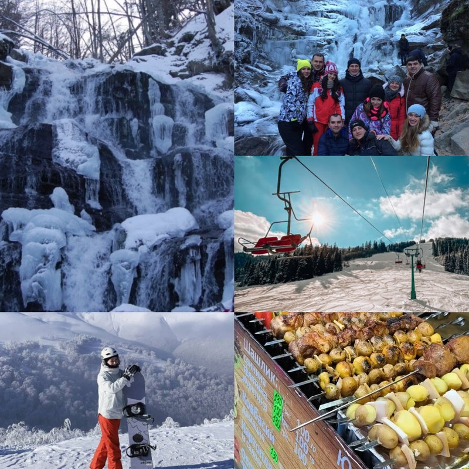
Зимова екскурсія з Трускавця на Боржаву — казка серед Карпатських гір. Відвідаємо Воловецький перевал, піднімемося канатно-крісельним витягом на гору Гимба та побачимо водоспад Шипіт. Це оглядова природнича подорож; катання на лижах і санках не передбачене.
Узимку Боржава перетворюється на справжню казку: засніжені гори, чисте гірське повітря та панорами, від яких хочеться зупинитися й просто дивитися. Зробимо зупинку на Воловецькому перевалі, а потім піднімемося канатно-крісельним витягом на гору Гимба. З висоти відкриваються краєвиди на зимове високогір’я — чудова нагода насолодитися горами та зробити пам’ятні фото.
Далі завітаємо до водоспаду Шипіт: серед зимового лісу він створює особливу атмосферу й стає однією з найяскравіших зупинок подорожі. Після знайомства з природними красотами можна буде перепочити та замовити страви в корчмі «У Івана Хрипти».
Це оглядова екскурсія, катання на лижах і санках програмою не передбачене.
Оплачуються окремо від вартості поїздки.
Харчування в корчмі — оплачується окремо за меню.
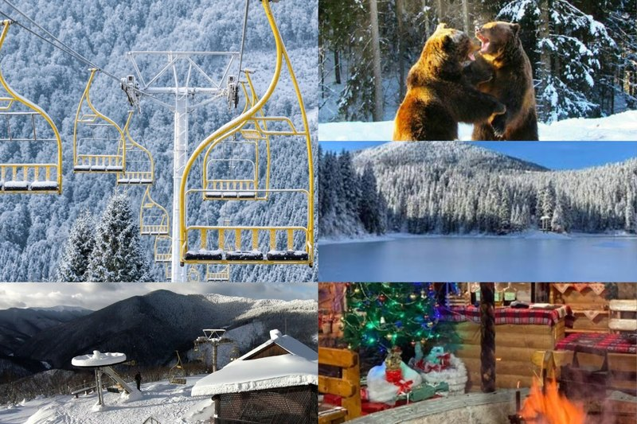
Зимова екскурсія з Трускавця до Синевиру — зустріч із казковими Карпатами. Багато хто бачив Синевир улітку, але зимові гори відкривають зовсім іншу красу: засніжені схили, тихі ліси й особливу атмосферу, заради якої хочеться вирушити в дорогу.
Піднімемося канатно-крісельним витягом на гору Маковиця біля Міжгір’я. З висоти відкриваються мальовничі краєвиди на зимове високогір’я — можна подихати свіжим повітрям і зробити фото на пам’ять. Потім відвідаємо реабілітаційний центр бурих ведмедів, де тварини перебувають під опікою фахівців.
Головна зустріч дня — озеро Синевир. У зимовому вбранні воно постає особливо загадковим і величним: серед гір та засніжених дерев відчувається справжня тиша Карпат. Після прогулянки можна буде відпочити й замовити страви в колибі.
Це оглядова природнича екскурсія. Катання на лижах і санках програмою не передбачене.
Оплачуються окремо від вартості поїздки.
Харчування в колибі — оплачується окремо за меню.
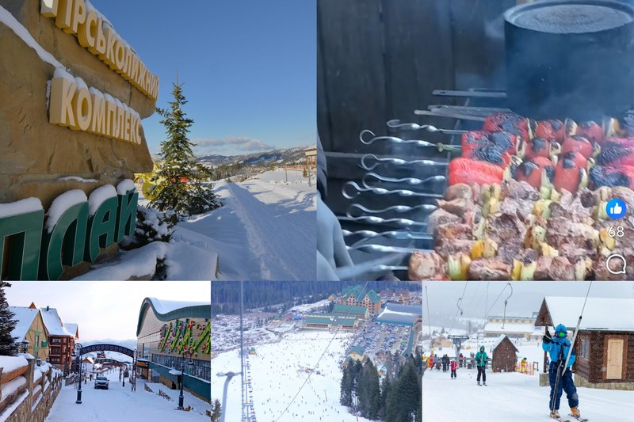
Зимова екскурсія з Трускавця до гірськолижного курорту Плай. Проведіть день серед Карпатських гір: обирайте лижі чи сноуборд, підйом канатно-крісельним витягом або відпочинок у СПА-центрі «Шафран». А після гірських розваг завітайте на вечерю до водоспаду Кам’янка — смачна кухня та мальовничі краєвиди стануть чудовим завершенням подорожі.
На курорті Плай кожен може обрати відпочинок до душі: покататися на лижах або сноуборді, піднятися канатно-крісельним витягом чи провести час у СПА-центрі «Шафран». Прокат лиж, сноуборда та спорядження доступний у Козьовій. Щоб не витрачати час на довгу зупинку для харчування на курорті, залишимо більше часу для розваг, а на вечерю вирушимо до водоспаду Кам’янка.
Вечеря біля водоспаду Кам’янка — оплачується окремо за меню.
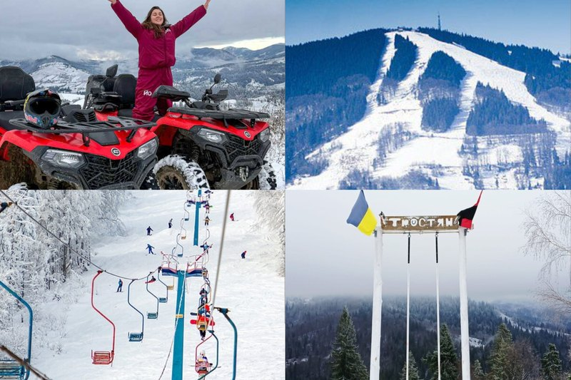
Екскурсія з Трускавця на гору Тростян — день катання на лижах і сноуборді в Карпатах. На вас чекають гірські схили, зимові краєвиди та час для активного відпочинку. На горі можна перепочити й замовити страви в колибі.
Їдемо на Тростян за зимовим драйвом і катанням! Підніміться крісельним витягом і проведіть день на гірських схилах: катайтеся на лижах чи сноуборді, насолоджуйтеся карпатськими краєвидами та відпочинком у колибі.
У вільний час можна замовити їжу в колибі або обрати інші доступні на курорті зимові розваги. За наявності місцевих операторів можуть пропонуватися квадроцикли чи снігоходи; їхня доступність залежить від погоди та роботи операторів.
За тарифами курорту оплачуються квитки на підйомник, катання на лижах і сноуборді, прокат спорядження та додаткові розваги. Харчування — окремо за меню.
У неділю можливі черги за квитками та спорядженням.
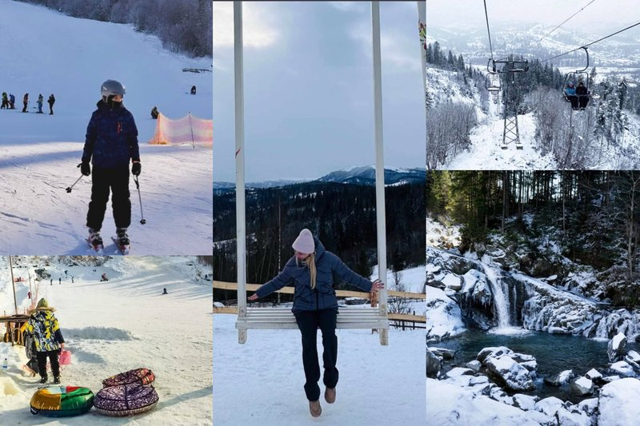
Екскурсія з Трускавця на Погар і до водоспаду Кам’янка. Підйом канатно-крісельним витягом, гірські краєвиди та час для зимових розваг — у короткій, але насиченій поїздці. За бажанням можна спробувати сноутюбінг, скористатися лижною школою, покататися на квадроциклах або відпочити на гойдалках та атракціонах. На завершення — Кам’янка й смачна вечеря.
На Погарі кожен може обрати заняття до душі: піднятися канатно-крісельним витягом, провести час на схилах, спробувати сноутюбінг або взяти заняття у лижній школі. Також на горі можуть бути доступні квадроцикли, гойдалки та інші атракціони — їхня робота залежить від сезону, погоди й місцевих операторів.
Після відпочинку на горі вирушимо до водоспаду Кам’янка. Там можна помилуватися природою та повечеряти. Вхід на територію заповідника з водоспадом Кам’янка включений у вартість квитка на екскурсію.
Вхід до заповідника з водоспадом Кам’янка — включений у вартість екскурсії.
Вечеря — оплачується окремо за меню.
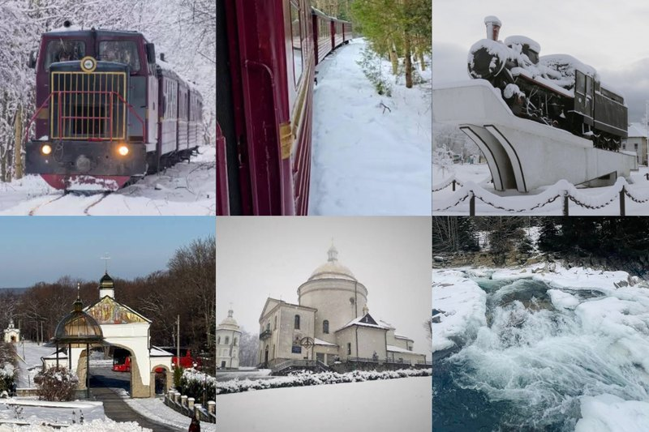
Зимова екскурсія з Трускавця Карпатським трамваєм і до Гошівського монастиря. Відчуйте спокій зимових Карпат у затишному вагоні вузькоколійки: за вікном — гірські ліси, річка Мізунка, водоспади й мальовничі перекати. На завершення відвідаємо Гошівський Василіянський монастир на Ясній Горі.
У Вигоді сядемо на Карпатський трамвай — вузькоколійку, що проходить мальовничою долиною річки Мізунки. Узимку подорож особливо затишна: можна зігрітися в закритому вагоні та милуватися природою за вікном.
Під час мандрівки побачимо санаторій «Джерело Прикарпаття», болото Ширковець, Мізунські водоспади «Сріблясті» та річкові перекати. Після повернення до Вигоди матимемо час на обід у кафе «Вигода», де можна буде обрати один із двох комплексних обідів бойківської кухні.
Далі вирушимо до Гошева, на Ясну Гору. Відвідаємо Гошівський Василіянський монастир і храм Преображення Господнього, де зберігається та вшановується чудотворна Гошівська ікона Божої Матері.
Харчування в кафе «Вигода» — оплачується окремо за меню.